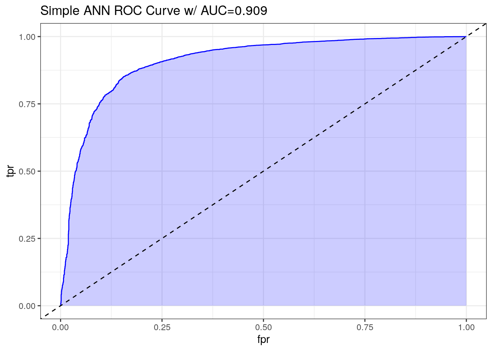
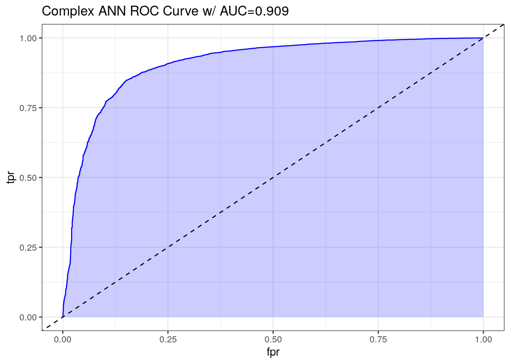

4 Artificial Neural Network (ANN)
4.1 Introduction
Below paragraph is copied from the assignment, we are planning on updating this as we formulate our narrative for the final deliverable:
Artificial Neural Networks (ANNs) are modeled after the human brain and capable of learning and improving from experience. One strength is their ability to adapt to complex patterns and relationships in high-dimensional data, making them powerful tools for our dataset. However, ANNs require large amounts of training data and computational resources, which can make implementation time-consuming and resource-intensive.
We will now attempt using an ANN. Despite being considered a ‘black box’ model due to its difficulty in interpreting decision-making processes compared to models like DT, ANNs may perform slightly better than LR in terms of accuracy.
4.2 Load Data
# Load data
train_ann <- read.csv('Train Test Set/train_ann.csv')
test_ann <- read.csv('Train Test Set/test_ann.csv')
# Display statistics
str(train_ann)## 'data.frame': 10379 obs. of 27 variables:
## $ gender_female : int 1 1 1 0 1 1 1 0 1 1 ...
## $ gender_male : int 0 0 0 1 0 0 0 1 0 0 ...
## $ age : num 0.213 0.426 0.106 0.106 0.234 ...
## $ fam_history_overweight1 : int 1 1 1 1 1 1 1 1 1 0 ...
## $ freq_consumption_hc_food1 : int 1 1 1 1 1 1 0 1 1 0 ...
## $ veg_freq : num 1 0.552 1 1 1 ...
## $ num_meals : num 0.667 0.659 0.667 0.667 0.667 ...
## $ food_between_meals_frequently : int 0 0 0 0 0 0 0 0 0 1 ...
## $ food_between_meals_never : int 0 0 0 0 0 0 0 0 0 0 ...
## $ food_between_meals_sometimes : int 1 1 1 0 1 1 1 1 1 0 ...
## $ smoke1 : int 0 0 0 0 0 0 0 0 0 0 ...
## $ water_daily : num 0.736 0.482 0.933 1 0.932 ...
## $ caloric_beverages1 : int 0 0 0 1 0 0 0 0 0 0 ...
## $ activity_freq : num 0.0557 0.3292 0.4882 1 0.0883 ...
## $ tech_use : num 0.243 0 0.328 0 0.337 ...
## $ alcohol_never : int 0 0 0 0 0 0 0 0 0 0 ...
## $ alcohol_sometimes : int 1 1 1 1 1 1 1 1 1 1 ...
## $ transport_bike : int 0 0 0 0 0 0 0 0 0 0 ...
## $ transport_motorbike : int 0 0 0 0 0 0 0 0 0 0 ...
## $ transport_public_transportation: int 1 0 1 1 1 1 1 1 1 1 ...
## $ transport_walking : int 0 0 0 0 0 0 0 0 0 0 ...
## $ eating_habit_binary : num 0.833 0.68 0.833 0.833 0.833 ...
## $ physical_activity_binary : num 0.336 0.598 0.562 1 0.318 ...
## $ age_group_young_adult : int 1 1 1 1 1 1 1 1 1 1 ...
## $ age_group_adult : int 0 0 0 0 0 0 0 0 0 0 ...
## $ age_group_senior : int 0 0 0 0 0 0 0 0 0 0 ...
## $ obesity_leveloverweight : int 1 1 1 1 1 1 1 1 1 0 ...## gender_female gender_male age fam_history_overweight1
## Min. :0.0000 Min. :0.0000 Min. :0.0000 Min. :0.0000
## 1st Qu.:0.0000 1st Qu.:0.0000 1st Qu.:0.1277 1st Qu.:1.0000
## Median :1.0000 Median :0.0000 Median :0.1915 Median :1.0000
## Mean :0.5079 Mean :0.4921 Mean :0.2087 Mean :0.8177
## 3rd Qu.:1.0000 3rd Qu.:1.0000 3rd Qu.:0.2553 3rd Qu.:1.0000
## Max. :1.0000 Max. :1.0000 Max. :1.0000 Max. :1.0000
## freq_consumption_hc_food1 veg_freq num_meals
## Min. :0.0000 Min. :0.0000 Min. :0.0000
## 1st Qu.:1.0000 1st Qu.:0.5000 1st Qu.:0.6667
## Median :1.0000 Median :0.7223 Median :0.6667
## Mean :0.9166 Mean :0.7260 Mean :0.5858
## 3rd Qu.:1.0000 3rd Qu.:1.0000 3rd Qu.:0.6667
## Max. :1.0000 Max. :1.0000 Max. :1.0000
## food_between_meals_frequently food_between_meals_never
## Min. :0.0000 Min. :0.00000
## 1st Qu.:0.0000 1st Qu.:0.00000
## Median :0.0000 Median :0.00000
## Mean :0.1212 Mean :0.01253
## 3rd Qu.:0.0000 3rd Qu.:0.00000
## Max. :1.0000 Max. :1.00000
## food_between_meals_sometimes smoke1 water_daily
## Min. :0.0000 Min. :0.00000 Min. :0.0000
## 1st Qu.:1.0000 1st Qu.:0.00000 1st Qu.:0.3981
## Median :1.0000 Median :0.00000 Median :0.5000
## Mean :0.8446 Mean :0.01224 Mean :0.5146
## 3rd Qu.:1.0000 3rd Qu.:0.00000 3rd Qu.:0.7678
## Max. :1.0000 Max. :1.00000 Max. :1.0000
## caloric_beverages1 activity_freq tech_use alcohol_never
## Min. :0.00000 Min. :0.00000 Min. :0.0000 Min. :0.0000
## 1st Qu.:0.00000 1st Qu.:0.00235 1st Qu.:0.0000 1st Qu.:0.0000
## Median :0.00000 Median :0.33333 Median :0.2870 Median :0.0000
## Mean :0.03276 Mean :0.32699 Mean :0.3074 Mean :0.2461
## 3rd Qu.:0.00000 3rd Qu.:0.52884 3rd Qu.:0.5000 3rd Qu.:0.0000
## Max. :1.00000 Max. :1.00000 Max. :1.0000 Max. :1.0000
## alcohol_sometimes transport_bike transport_motorbike
## Min. :0.0000 Min. :0.000000 Min. :0.000000
## 1st Qu.:0.0000 1st Qu.:0.000000 1st Qu.:0.000000
## Median :1.0000 Median :0.000000 Median :0.000000
## Mean :0.7289 Mean :0.001734 Mean :0.001927
## 3rd Qu.:1.0000 3rd Qu.:0.000000 3rd Qu.:0.000000
## Max. :1.0000 Max. :1.000000 Max. :1.000000
## transport_public_transportation transport_walking eating_habit_binary
## Min. :0.0000 Min. :0.00000 Min. :0.0000
## 1st Qu.:1.0000 1st Qu.:0.00000 1st Qu.:0.6546
## Median :1.0000 Median :0.00000 Median :0.6667
## Mean :0.8056 Mean :0.02226 Mean :0.6877
## 3rd Qu.:1.0000 3rd Qu.:0.00000 3rd Qu.:0.8333
## Max. :1.0000 Max. :1.00000 Max. :1.0000
## physical_activity_binary age_group_young_adult age_group_adult
## Min. :0.0000 Min. :0.0000 Min. :0.00000
## 1st Qu.:0.3442 1st Qu.:1.0000 1st Qu.:0.00000
## Median :0.4573 Median :1.0000 Median :0.00000
## Mean :0.4732 Mean :0.9019 Mean :0.05222
## 3rd Qu.:0.6000 3rd Qu.:1.0000 3rd Qu.:0.00000
## Max. :1.0000 Max. :1.0000 Max. :1.00000
## age_group_senior obesity_leveloverweight
## Min. :0.000000 Min. :0.0000
## 1st Qu.:0.000000 1st Qu.:0.0000
## Median :0.000000 Median :1.0000
## Mean :0.003276 Mean :0.7262
## 3rd Qu.:0.000000 3rd Qu.:1.0000
## Max. :1.000000 Max. :1.0000## gender_female gender_male age fam_history_overweight1
## 1 1 0 0.2127660 1
## 2 1 0 0.4255319 1
## 3 1 0 0.1063830 1
## 4 0 1 0.1063830 1
## 5 1 0 0.2340426 1
## 6 1 0 0.2553191 1
## freq_consumption_hc_food1 veg_freq num_meals food_between_meals_frequently
## 1 1 1.0000000 0.6666667 0
## 2 1 0.5516675 0.6593030 0
## 3 1 1.0000000 0.6666667 0
## 4 1 1.0000000 0.6666667 0
## 5 1 1.0000000 0.6666667 0
## 6 1 1.0000000 0.6666667 0
## food_between_meals_never food_between_meals_sometimes smoke1 water_daily
## 1 0 1 0 0.7364515
## 2 0 1 0 0.4822175
## 3 0 1 0 0.9327950
## 4 0 0 0 1.0000000
## 5 0 1 0 0.9317565
## 6 0 1 0 0.1737795
## caloric_beverages1 activity_freq tech_use alcohol_never alcohol_sometimes
## 1 0 0.05569533 0.2434340 0 1
## 2 0 0.32917367 0.0000000 0 1
## 3 0 0.48822467 0.3277855 0 1
## 4 1 1.00000000 0.0000000 0 1
## 5 0 0.08827700 0.3366050 0 1
## 6 0 0.07248500 0.3126750 0 1
## transport_bike transport_motorbike transport_public_transportation
## 1 0 0 1
## 2 0 0 0
## 3 0 0 1
## 4 0 0 1
## 5 0 0 1
## 6 0 0 1
## transport_walking eating_habit_binary physical_activity_binary
## 1 0 0.8333333 0.3360436
## 2 0 0.6802073 0.5975042
## 3 0 0.8333333 0.5618206
## 4 0 0.8333333 1.0000000
## 5 0 0.8333333 0.3183242
## 6 0 0.8333333 0.3184210
## age_group_young_adult age_group_adult age_group_senior
## 1 1 0 0
## 2 1 0 0
## 3 1 0 0
## 4 1 0 0
## 5 1 0 0
## 6 1 0 0
## obesity_leveloverweight
## 1 1
## 2 1
## 3 1
## 4 1
## 5 1
## 6 14.3 Model ANN
4.3.1 Simple ANN
We will initiate with a single neuron (single node) ANN to run a preliminary simple model. Once we have finished working on that model, we will create a more complex model consisting of one hidden layer and one neuron.
## Length Class Mode
## call 4 -none- call
## response 10379 -none- numeric
## covariate 269854 -none- numeric
## model.list 2 -none- list
## err.fct 1 -none- function
## act.fct 1 -none- function
## linear.output 1 -none- logical
## data 27 data.frame list
## exclude 0 -none- NULL
## net.result 1 -none- list
## weights 1 -none- list
## generalized.weights 1 -none- list
## startweights 1 -none- list
## result.matrix 32 -none- numeric4.3.2 Complex ANN
Adding hidden layers increases computational requirements, so this will take significantly longer to run compared to a simple ANN.
# Display summary
model_ann_complex <- neuralnet(
obesity_leveloverweight ~ .,
data = train_ann,
hidden = c(1, 1),
stepmax = 1e+07
)## Length Class Mode
## call 5 -none- call
## response 10379 -none- numeric
## covariate 269854 -none- numeric
## model.list 2 -none- list
## err.fct 1 -none- function
## act.fct 1 -none- function
## linear.output 1 -none- logical
## data 27 data.frame list
## exclude 0 -none- NULL
## net.result 1 -none- list
## weights 1 -none- list
## generalized.weights 1 -none- list
## startweights 1 -none- list
## result.matrix 34 -none- numeric4.4 Evaluate ANN
4.4.1 Simple ANN
# Make a prediction
prediction_ann_probability <- predict(model_ann, test_ann)
prediction_ann <- ifelse(prediction_ann_probability >= 0.5, 1, 0)
summary(prediction_ann_probability)## V1
## Min. :0.08761
## 1st Qu.:0.53668
## Median :0.90047
## Mean :0.73205
## 3rd Qu.:0.97776
## Max. :1.00227# Perform confusion matrix
cm_ann <- confusionMatrix(
as.factor(prediction_ann),
as.factor(test_ann$obesity_leveloverweight),
positive = '1'
)
cm_ann## Confusion Matrix and Statistics
##
## Reference
## Prediction 0 1
## 0 1939 561
## 1 824 7055
##
## Accuracy : 0.8666
## 95% CI : (0.8599, 0.873)
## No Information Rate : 0.7338
## P-Value [Acc > NIR] : < 2.2e-16
##
## Kappa : 0.6478
##
## Mcnemar's Test P-Value : 1.922e-12
##
## Sensitivity : 0.9263
## Specificity : 0.7018
## Pos Pred Value : 0.8954
## Neg Pred Value : 0.7756
## Prevalence : 0.7338
## Detection Rate : 0.6797
## Detection Prevalence : 0.7591
## Balanced Accuracy : 0.8141
##
## 'Positive' Class : 1
## Based on the confusion matrix, we observe that the model achieves an accuracy of 0.8666, sensitivity of 0.9263, and a Kappa coefficient of 0.6478. We will assess these results towards the conclusion of the assignment when we have completed stacked models.
# Plot AUC
pred <- ROCR::prediction(
prediction_ann_probability,
test_ann$obesity_leveloverweight
)
perf <- ROCR::performance(pred, measure = "tpr", x.measure = "fpr")
auc <- ROCR::performance(pred, measure="auc")
auc <- round(auc@y.values[[1]],3)
roc.data <- data.frame(fpr=unlist(perf@x.values),
tpr=unlist(perf@y.values),
model="GLM")
ggplot(roc.data, aes(x=fpr, ymin=0, ymax=tpr)) +
geom_ribbon(alpha=0.2, fill = "blue") +
geom_line(aes(y=tpr), col = "blue") +
geom_abline(intercept = 0, slope = 1, lty = "dashed") +
labs(title = paste0("Simple ANN ROC Curve w/ AUC=", auc)) +
theme_bw()
4.4.2 Complex ANN
# Make a prediction
prediction_ann_complex_probability <- predict(model_ann_complex, test_ann)
prediction_ann_complex <- ifelse(prediction_ann_complex_probability >= 0.5, 1, 0)
summary(prediction_ann_complex_probability)## V1
## Min. :0.04298
## 1st Qu.:0.51153
## Median :0.91891
## Mean :0.73173
## 3rd Qu.:0.97819
## Max. :0.97998# Perform confusion matrix
cm_ann_complex <- confusionMatrix(
as.factor(prediction_ann_complex),
as.factor(test_ann$obesity_leveloverweight),
positive = '1'
)
cm_ann_complex## Confusion Matrix and Statistics
##
## Reference
## Prediction 0 1
## 0 1973 594
## 1 790 7022
##
## Accuracy : 0.8667
## 95% CI : (0.86, 0.8731)
## No Information Rate : 0.7338
## P-Value [Acc > NIR] : < 2.2e-16
##
## Kappa : 0.6508
##
## Mcnemar's Test P-Value : 1.592e-07
##
## Sensitivity : 0.9220
## Specificity : 0.7141
## Pos Pred Value : 0.8989
## Neg Pred Value : 0.7686
## Prevalence : 0.7338
## Detection Rate : 0.6766
## Detection Prevalence : 0.7527
## Balanced Accuracy : 0.8180
##
## 'Positive' Class : 1
## Based on the confusion matrix, we observe that the model achieves an accuracy of 0.8667, sensitivity of 0.922, and a Kappa coefficient of 0.6508. We will assess these results towards the conclusion of the assignment when we have completed stacked models.
# Plot AUC
pred <- ROCR::prediction(
prediction_ann_complex_probability,
test_ann$obesity_leveloverweight
)
perf <- ROCR::performance(pred, measure = "tpr", x.measure = "fpr")
auc <- ROCR::performance(pred, measure="auc")
auc <- round(auc@y.values[[1]],3)
roc.data <- data.frame(fpr=unlist(perf@x.values),
tpr=unlist(perf@y.values),
model="GLM")
ggplot(roc.data, aes(x=fpr, ymin=0, ymax=tpr)) +
geom_ribbon(alpha=0.2, fill = "blue") +
geom_line(aes(y=tpr), col = "blue") +
geom_abline(intercept = 0, slope = 1, lty = "dashed") +
labs(title = paste0("Complex ANN ROC Curve w/ AUC=", auc)) +
theme_bw()